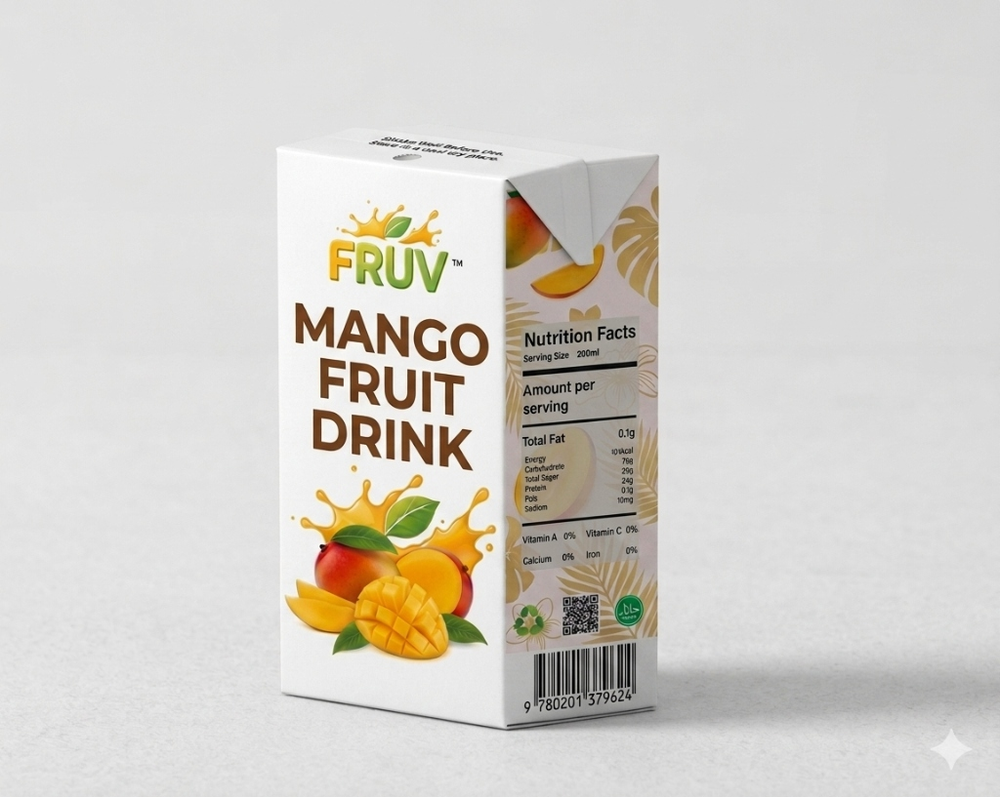
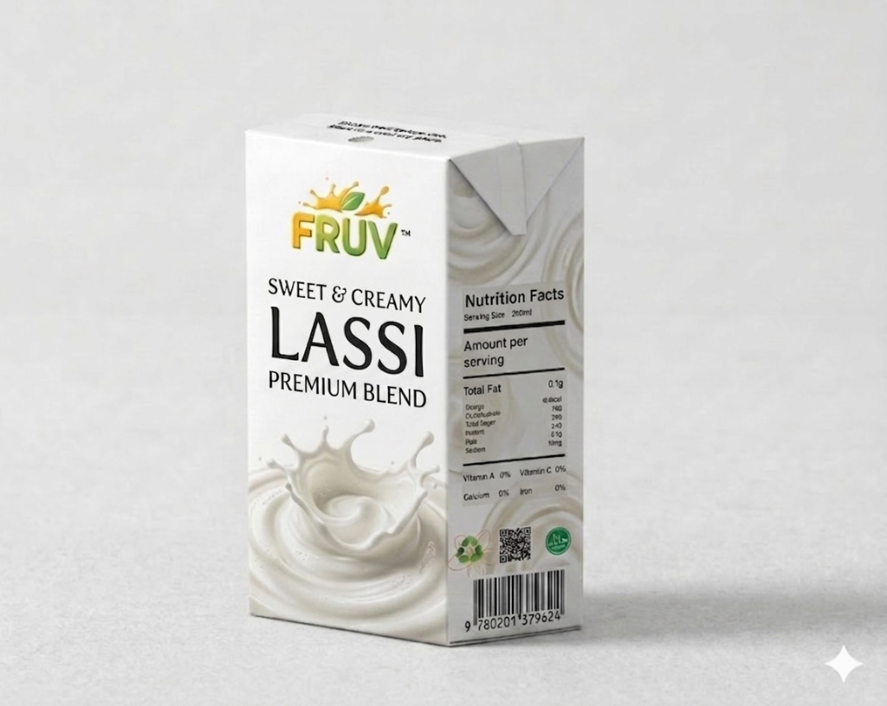
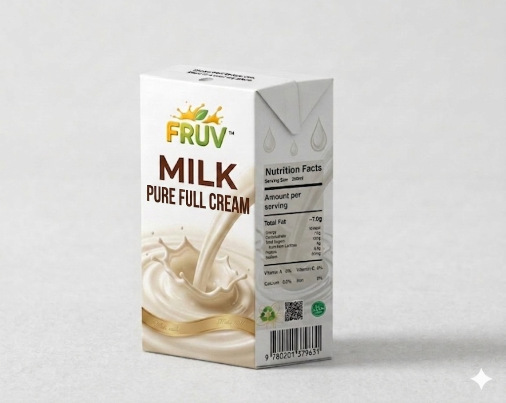

MANGO
fruit drink
A modern take on a classic fruit drink with a perfect blend of sweet and tart, full of nostalgic flavor.
Pure Blessing,
Sip by Sip
FRUV™ is a premium functional drink brand based in Jhang, Pakistan. We use real ingredients and high-quality Tetra Pak cartons to ensure every sip is refreshing and natural.

Fruv Mango
12% Real Mango Pulp. No artificial colors. Just pure fruit goodness.

Fruv Lassi
Sweet & Creamy Premium Blend. A modern take on an authentic classic.

Fruv Milk
Pure Full Cream Milk. 100% natural and fresh from the farm.
Ingredients & Benefits
Carefully selected natural ingredients that deliver real nutrition and amazing taste.
Real Fruit Pulp
Made with genuine fruit pulp — no concentrates or synthetic flavoring. Just real fruit in every sip.
Pure Water
Triple-filtered mineral water forms the base of every FRUV drink, ensuring clean, crisp hydration.
Natural Sweetener
Lightly sweetened with cane sugar and stevia for a balanced taste without the sugar crash.
Vitamins B & C
Fortified with essential vitamins to support your energy, immunity, and overall wellness.
No Preservatives
Tetra Pak technology keeps drinks fresh naturally — zero artificial preservatives needed.
Natural Fiber
Contains natural dietary fiber from real fruit, supporting healthy digestion with every serving.
Nutrition Facts
Transparent nutrition for a healthier choice.
What People Say
Frequently Asked
FRUV uses real fruit pulp, natural sweeteners, and zero preservatives. Our Tetra Pak packaging keeps everything fresh without the need for artificial additives — it's functional, modern, and honestly delicious.
FRUV is available at leading supermarkets and convenience stores across Pakistan. You can also order directly through our website or find us on major delivery platforms.
Absolutely! FRUV is made with 100% natural ingredients, no artificial colors or preservatives, making it a great choice for kids and adults alike.
We currently offer three variants: Mango (classic fruit drink), Lassi (premium yogurt blend), and Full Cream Milk. More exciting flavors are on the way!
Thanks to Tetra Pak's aseptic packaging technology, FRUV stays fresh for up to 12 months without refrigeration. Once opened, consume within 3 days and keep refrigerated.
Ready to Taste
the Difference?
Experience FRUV™ — where every sip is a pure blessing. Order now and discover your new favorite drink.